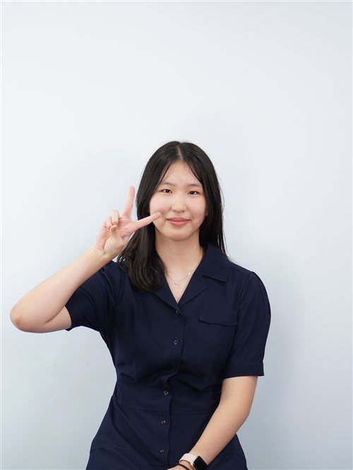
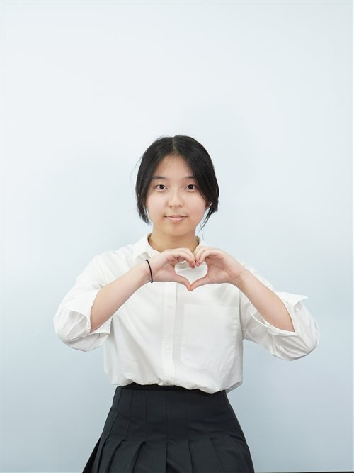

01
Read these before the conference.
Agenda 2
합성 마약 밀매 근절을 위한 국제 공조 강화

Honorable chairs, fellow delegates, esteemed staff and respected directors. I am So Hyun Park, the Chair of UNODC. It is a great honor to serve as a Head Chair and hope to have a wonderful debate during the 3 days journey.
I started my MUN journey in 2024, when I was 14 years old. Honestly, I was a student who did not give high quality of speech and POI. I was hesitant to give a speech and POI as I was nervous to speak in front of the number of people. Even though I had a lot of MUN experience, I had less confidence, but I tried to overcome my fear. Then, I realized the power of voice.
My speech and POI can convince others to reconsider their opinions, which encourages me to debate actively.
Through KISMUN 2026 slogan: "Value your voice, Voice your value.", I hope delegates realize the power of their voice and not to be afraid to speak in front of people.
I am aware that for some delegates, KISMUN will be a great challenge. However, I highly encourage you to try your best, so your voice can value everyone. I am looking forward to delegates attempting rather than giving up their POI and speech and also push themselves harder during the debate.
Sincerely,
So Hyun Park
Head Chair of United Nations Office on Drugs and Crime
KISMUN 2026

Honorable chairs, fellow delegates and staff members. I am Bona Lee, the Deputy Chair of UNODC. It is an honor to serve as a Chair in UNODC.
When I first started my MUN journey, I was obsessed with the idea of being perfect. I used to write down every single word of my speeches in advance, rehearsing them until my hands stopped shaking. But as I attended more conferences, I realized that diplomacy isn't about being flawless. It's about the process, researching the issues deeply, stepping up even when you're uncertain, and turning every debate into a learning experience.
This is why I want everyone to remember one main thing. Value your voice, Voice your value. Great ideas mean nothing if they just stay inside your head. You have to put them out.
Your voice only has power when you choose to use it.
Therefore, don't be afraid to make mistakes. Just raise your placard, step up, and show everyone what you've got.
Whether this is your first conference or not, I encourage you to push your boundaries. Stand tall at the podium, trust your preparations, and let the room hear what you have to say.
Best regards,
Bona Lee
Deputy Chair of United Nations Office on Drugs and Crime
KISMUN 2026.